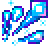
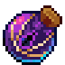
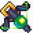

Dead Cells 遊び倒し
Dead Cells 遊び倒し
最終更新: 2019/06/29
セーブデータのプレイ回数が350(PC)+450(Swith)で800回を超えました。
- Steam: https://store.steampowered.com/app/588650/Dead_Cells/
- switch: https://ec.nintendo.com/JP/ja/titles/70010000013175
- PS4: https://store.playstation.com/ja-jp/product/UP4016-CUSA11253_00-JPPS400000000001
楽しい戦い方
装備に選択権などない！ 単色+適応
カスタムゲームのゲームプレイ補助効果の「適応」をオンにすると、中間地点にたどり着くたびに、装備がランダムで入れ替わる。 同じレベル（ただしランクは変わる）の武器に入れ替わる。
よって、赤、紫、緑の色を選び、その色の装備だけをオンにすると、
とりあえず攻略できる戦い方
氷の欠片 + オイルグレネード x2

氷の欠片は、オイルで簡単にクリティカル条件を満たすことができる。 オイルグレネードを2つ持っていれば、ずっとオイルで満たすことができる、オイルは結構遠距離まで効果があるのでほぼこれだけでクリアできる。
錬金銃
!
遠距離から毒を投げてあとは敵が死ぬのを待つだけ！ 急に近づかれた場合、ワープの緊急避難として、パワーグレネードを持っておけば、とりあえずクリアできる。
武器の感想
近接武器
- 錆びた剣 : 初期剣。ただ攻撃速度はなかなか。これでもボスセル0ならクリアできた。
- 精巧な剣 : 小さい連続攻撃の剣。もう少し威力が欲しく、避けてしまう武器。
- 絶望の剣 : ダメージ後or呪いでクリティカル。そもそもダメージを喰らわなくてはいけないというのは辛い。呪いを楽しむならなら呪いの剣の方が強いし。
- 暗殺者のダガー : 背後から攻撃するとクリティカル。好き。敵の背後に移動するという回避行動と、クリティカルが両立している。ちょっと強すぎるので、楽にクリアできる。
- 血呑みの剣 : 出血効果。威力がちょっと足りない。変異の出血した相手への追加ダメージがなくなってしまった。この剣とトラップの組み合わせなのだろうか。
- ツインダガー : 3撃目がクリティカル。悪いくないが、良くもない。
- 広刃の剣 : クリティカルはないが、モージョンが大きいダメージの高い剣。速い敵には辛いが、3撃目が強いので、1、2撃目を遠くでして、ロールして近づき3撃目を当てる感じになる。
- シャベル : 敵の攻撃を跳ね返せる。ボムを跳ね返すの楽しい。
- 呪いの剣 : 呪いになる。確かに強い。
- 狂信者のダガー : 出血、毒の敵にクリティカル。変異の「開いた傷口」と組み合わせると効果的だが、ちょっと威力が足りない。
- 迅速の剣 : スピードボーナス中はクリティカル。とにかくずばばばばーっと進まないといけなくなるので楽しい。
- 巨人殺し : エリートorボスにクリティカル。エリート相手でなくてもそこそこ強い。ボスセル4-5のお供。
- 破砕の斧 : 前方に破片が飛んでいく斧。破片もそこそこ攻撃力があり、実質遠距離武器。
- 波動の刃 : 敵を位置固定にする。動けなくして、背後に回って、倒す！（いつもそんなにうまくいかない）
- 戦の槍 : 複数の敵を同時攻撃でクリティカル。1撃目が遅く、失敗しがちだが、チャレンジする甲斐がある。
- 突き刺しの槍 : 敵の背後に壁があるとクリティカル。1撃目も速く、安定！
- 双天の槍 : すばやく2体倒すとクリティカル。あまり実用的ではないが、王の手ごっこ楽しい。
- レイピア : ローリング後の攻撃でクリティカル。暗殺者のダガーの弱い版にみえる。
- 串刺しの刃 : 進撃の途中で敵の後方にまわりこむ。キュッ、キュッ、スイー。スイーっで、背後に回れると思ったら失敗してダメージを喰らい安定しないので好きじゃない。
- 粉砕の槌 : スタン、凍結、位置固定の敵へクリティカル。かなり大ぶり。1撃目が遅すぎて使い物にならない。目眩の盾と組み合わせても複数敵がいるとうまくいかないし、照明弾は連続で使えないしで、扱いが難しい。
- スパルタのサンダル : ノックバックさせる。ノックバックして、土台から蹴落として倒すのがすごく楽しい。ただ攻撃力が殆ど無いので、ボスが辛い。
- スパイクブーツ : 攻撃モーション中の敵に攻撃するとクリティカル。とりあえずアタックしておけば、敵のモーションが始まってクリティカルになってくれる。
- ハヤブサのブーツ : 最後の攻撃がノックバックになる。ノックバックするまで手数があるので、ノックバック目的に使えない。
- ハヤブサの小手 : HP40%以下の敵にクリティカル。指が疲れる。
- ヴァルモントのムチ : 鞭の先端を当てるとクリティカル。うまく先端を当てれる間合いが難しい。思いの外攻撃範囲の高さ低くて、カミカゼにやられることが多い。
- 鉤爪のムチ : 鞭があたった敵を引き寄せて、3撃目の蹴りがクリティカル。攻撃範囲が広くて、雑で好き。
- 油を塗った剣 : 可燃性の油で覆う。他で炎の効果があると、青白い炎になって効果が上がってるはずだけど、認識できたことがない。氷の破片と組み合わせるとちょっと冒険な感じ。
- たいまつ : 敵を炎上させる。燃えるので、書かれている攻撃力よりずっと効果が高く好き。
- 狂乱の刃 : 体力50%以下でクリティカル。そもそも体力50%以下にして戦わないから要らない子。
- フローレス : 30秒以上ダメージを受けていないとクリティカル。ダメージを喰らうとすごく残念な気分になるので、あまり好きではない。
遠距離武器
- 看守の息子の弓 : 初期弓。
- 連弾の弓 : 2本飛んでく弓。結構強い。
- 無限の弓 : 打ち放題の弓。押しっぱなしで連投できるとよいのに。
- 射手の弓 : 遠距離から打つとクリティカル。強い。狭いところで撃つとすぐ矢がなくなる。わざわざ遠くから撃つので、ハイパーオリンピックじみてくる。
- 音速のクロスボウ : 敵を貫通する連続弓。押しっぱなしで打てるのは楽。敵をダウンさせられなかったときに、攻撃食らう。
- 足軽の弓 : 近距離でクリティカル。実質近接武器。そのわりにそこそこ攻撃力があって。楽しい。
- 早撃ちの弓 : 敵に2本以上矢が刺さっているとクリティカル。ボタン押しっぱなしで撃ってくれるので楽。攻撃力は心もとないが、それなりに活躍する。
- 氷の弓 : 凍らせる弓。攻撃力がないので、他の武器のサポートだが、盾が使えなくなるので、積極的に選ばれない。アイスグレネードと違って、敵が倒れると回収できるので、粉砕の槌を組み合わせられうと思いきや、複数の敵が襲ってきたときに詰みやすい。
- ヘヴィクロスボウ : 一度に周囲に大量のボルトを放つ。実質近接武器。なかなか攻撃力があって良い。
- リピータークロスボウ : 1撃目が位置固定で、2撃目位置固定の相手にクリティカル。2撃目当たると位置固定が溶けるので、なんのための位置固定かよくわからなくなる。地味に攻撃力が低い。
- 氷のクロスボウ : 短く押すと凍らせる、溜めるとクリティカル。1対1は良いが、複数の敵になると詰みやすい。
- 爆発性クロスボウ : 当たると爆発。直接当たった相手にクリティカル。なかなか攻撃力も優れるし、複数相手でもやり会える、バランスの取れた武器。
- 錬金銃 : 矢の軌跡上に毒を噴射。強い。遠くから毒を撒いていれば、時間はかかるが安全な場所から確実に敵が倒せる。毒特攻のタレットがあると完璧。強すぎるので、ちょっと避けている。
- ブーメラン : ブーメラン。使い勝手の悪さを楽しむ武器。弾無限と組み合わせると最強装備だった。変異「矢弾」を組み合わせると2つ投げられて強くなる。
- ヘモリッジ : 出血を起こす。出血or毒の敵へクリティカル。まだ評価できるほど使ってない。
- 少年の斧 : 当たると位置固定にするが、ダメージがなく、もう一度攻撃ボタンを押すと引き抜いてダメージ。近接した敵に連投はできなかったり、使い勝手の悪さを楽しむ武器。位置固定にいて背後に回って、引き抜こうとしたら、背後に別の敵がいてやられることがあるのも含めて、楽しい。
- 戦のジャベリン : 串刺しにする槍。壁に貼り付けると追加ダメージ。使い勝手が悪いと思いきや、複数の敵に当たるのでそんなに辛くない。ただしボス相手だと時間かかりすぎて、ゲームにならないので、ボスまでに次の武器に出会えるかドキドキする。
- ハクトの弓 : 追加ダメージが発生するマークを敵につける。サポート武器。使いこなせない。。。
- 鋼の神経 : 適切なタイミングで放つとクリティカル。簡単にクリティカルが出せて気持ち良い。
- 投げナイフ : 出血状態にする。攻撃力が低いので敬遠しがちだが、出血はじわじわ効いてきて、意外と強い。
- 電撃のムチ : 周囲の敵に光を飛ばす。結構連打しないといけない。
- 炎の焼き印 : 火炎瓶を投げて、地面を燃やす。侮れないくらい炎のちからが強い。
- 氷の欠片 : 敵を速度低下させ、さらに油に覆われているとクリティカル。油に覆われてない敵への攻撃力はカスだが、油に覆われていると途端に強くなる。オイルボムと組み合わせるのが定石。強すぎたのか、1.2で弾数制限ができた。
- 火球 : 火の玉を投げる。油に覆われているとクリティカル。
- ライトニングボルト : ボタンを押している間電撃を放ち、6段目からクリティカル。しかし、それ以上攻撃を続けるとダメージ。クリティカル条件が渋く、使い勝手が悪い。
- 大炎 : 火炎放射。油に覆われているとクリティカル。攻撃範囲は狭いので、使い勝手も良くない。
- 氷結の波動 : 敵を凍らせる。初心者の頃は心強いが、凍らせた後のちゃんと仕留めれるよう別の武器が必要。盾の変わりにこれを選択することはある。最近はハズレ武器扱い。
- マジックミサイル : マジックビーム。弾数制限ないのが不思議。電撃のムチのもっと攻撃範囲が広くなった感じ。動画でこれを中心に使ってる人もいるので、きっと強いのだろう。
盾
- 古びた木の盾 : 初期盾。パリィ以外の機能を求めないならばこれでも十分。
- 前線の盾 : 近接攻撃後に敵のダメージを受け止めると反撃ダメージ。赤が乗る盾で有能そうにみえるが、あまり役に立ったことがない。
- 眩暈の盾 : 受け止めた敵をスタンさせる。そもそもパリィすると、スタンに近い状態になるので、ほとんど価値が実感できなく、ハズレ武器扱い。
- 懲罰の盾 : 受け止めた敵の周囲にもダメージ。確かに周囲にも当たるが、それが有用になるほどのダメージがないので、ハズレ武器扱い。
- 突き出しの盾 : 後方へ敵を押し出す。紫が乗るが、紫ってる時はあんまりパリィしなくて実感できない。敵をパリィして土台から突き落とすのは楽しい。
- 防壁 : パリィするとバリアができる。有用だけど、期待した時にバリアが乗らなくて、おかしい。
- 強襲の盾 : 前方に突進しながらパリィして敵を押し出す。敵を土台から落として楽しむ盾。突進中ずっとパリィが有効なので、パリィの成功率が高くなる（油断は禁物）。
- 血の盾 : 出血状態にする。盾の出血
- 欲望の盾 : パリィ時にゴールドを落とす。パリィで手に入るゴールドが10倍ぐらいにならないと、この盾を選ぶ気にならない。ハズレ武器。
- トゲの盾 : 強烈な反射ダメージ。パリィだけで敵を倒せるほどの強烈なダメージがあり、パリィを楽しみたくて仕方がない時に装備する。パリィもしようという程度の気持ちの時に持ち出すと、これだけで敵が倒れてしまって拍子抜けするほどこの盾は強いので、あえてこの盾を選ばないプレイをする。
- 弾きの盾 : パリィしかできないが、投射物を跳ね返すと強力。トゲの盾の、下位互換な感じがして使わない。
- 障壁の盾 : 構えるとバリアを張って無敵になる。パリィもできる様になって、使うようになったが、バリアが有用だったことがなくて悲しい。
- 雷の盾 : 構えると前方に電撃を放つ。パリィ後だとクリティカル。ダメージ低いけど、敵を舐めてかかっているようで、好き。構えた状態からすぐにパリィに移れなくて、気持ちがバグる。コンシェルジュをこれで倒すのは時間かかった。
トラップ、タレット
- 自動ダブルクロスボウ : 近接の敵2体に矢を撃つ。強い。毒とか乗ると更に強い。
- 斬腱の塔 : 出血する球（丸のこ）を飛ばす。あまり活用できたことがなく、弱めのタレットの印象だけ。
- ヘヴィタレット : 近接に矢を撃つ。強すぎる。毒とか乗ると更に強すぎる。
- フジツボ : 天井に張り付いて球を撃つ。天井にいて、敵の注目を集めず、壊されないから、連続してダメージが期待できる。しかし、敵の攻撃はプレイヤーが裁かねばならない。
- 火炎タレット : 周囲に火炎放射する。結構強いが、倒す前に壊されるイメージ。赤が乗るのでボス戦に有用。
- 裂傷の歯 : 地面に丸のこを敷き、上を通過した敵にダメージ。踏まれると耐久度が減り、長続きしないのであまり活用できたことがない。
- ウルフトラップ : 上を通る敵を位置固定状態にするトラップを2つ投げる。位置固定されるので、背後に回って攻撃が楽しい。
- クラッシャー : 断続的に地面から波動を与える。強い。名前の通りクラッシャー。
- デコイボム : 敵の攻撃を引きつけるカカシが、一定時間後爆発する。他のタレットも敵の攻撃を引き付ける機能があるので、あまり活用できたことがない。
グレネード
- パワーグレネード : 普通の爆弾。強い。1個あると、複数の敵を同時に処理しなきゃいけない時に、ボムっと倒せちゃう。
- 歩兵のグレネード : 弱く小さい代わりにクールダウンが2、3秒のグレネード。ちょっと頼りない。先にボムを投げて、近接攻撃で残りを削るのに使えそうで、活用できてない。
- クラスターボム : 小さい爆弾を6つばらまく。攻撃範囲が広くて、強い。
- マグネティックグレネード : 敵を吸い込む磁石を投げ込む。これ、グレネードと言いつつ、タレットでしょ。
- 照明弾 : 敵を2秒間スタンにさせる。ちょっと短くて頼りない上に、ダメージもないようなもの。もっとクールダウンが短くてもいいのに。
- アイスグレネード : 5秒間凍結状態にする。いざという時にあると心強いが、積極的には選ばないなー。以外と普通の敵でも抵抗してくるので、信用度が低い。
- ファイアグレネード : 敵を炎上状態にする。グレネード自体の攻撃力は小さいが、炎上はく、結局倒せてしまう。
- ルートボム : 敵を位置固定にする。位置固定にする手段が増えた今、スキル枠使うならウルフトラップを使うし、攻撃力は期待できない
- オイルグレネード : 油を撒き散らす。油は消えない上に、壁を超えてかなり広範囲に効果がある。油で追加ダメージ系と組み合わせて、世界を油まみれにして、楽しむ。
- スウォーム : バイターが出る。8匹まで出る。攻撃力は本当に低いが、バイターで倒された敵が可愛そうになる。他の武器に、バイター付加が追加されるので、このボムを選ぶ時は、バイターを愛でたい時だ。
パワー
- 死のオーブ : 低速なエネルギーオーブを放つ。これが決定打にならない程度の攻撃力しかなくて、結局使ってない。
- トルネード : 足場を往復するトルネードが爆弾を蹴散らす。王の手の爆弾でも飛ばせる。
- ナイフダンス : 出血状態にするナイフをばらまく。あまり使ってないなー。
- 腐食の力 : 一定時間攻撃力UP、敵の攻撃力もUP。使いこなせたらかっこいい。
- 吸血 : 敵を出血状態にして、さらに敵が回復アイテムを落とす。ステージで1回しか使えない。出血ダメージも小さいので使ってない。
- トニック : 4%回復し、3秒間無敵になる。ステージで1回しか使えない。ステージで1回しか使えないのが悲しい。回復なくてもいいから、複数回使いたい。
- フェイザー : 敵の背後に瞬間移動してダメージ増加、しかも標的は短時間スタン。有能すぎるが、近接武器のときには、ボム選んでしまうので、これを使うことが少ないなー。
- 腐食の雲 : 毒にする。毒に追加ダメージが乗ったタレットをゲットできたら、すごく使える。クールダウンがちょっと長い。
- 裂傷のオーラ : ダメージのあるオーラを一定時間放出。結構攻撃力があるので、エリートに突っ込むときとか、雑魚が湧いてる時に使える。
- 拒絶の波動 : 跳ね飛ばし、壁に当たると追加ダメージ。壁ダメージや土台落下ダメージが大きい上に、クールダウンが短いので、主力になる。
- カラスの翼 : 浮き上がって下にダメージ。遠距離攻撃を持った敵が増えたので、イマイチ用途がよくわからない。
- 戦うフクロウ : フクロウを召喚してフクロウが弾を飛ばして攻撃する。ドローンとかじゃなくて、フクロウなのが良い。そしてなかなか強い。
変異
- 殺戮者の本能 :
- コンボ :
- ヴェンジェンス :
- メレー :
- 開いた傷口 :
- 穢れたフラスコ :
- 兵士の耐久 :
- バーサーカー :
- 狩猟者の本能 :
- サポート :
- 置き土産 :
- 静寂の戦士 :
- リッパー :
- 盲信 :
- カウンターアタック :
- 回避回生 :
- ネクロマンシー :
- 緩回復 :
- ガストロノミー :
- スパイトフル :
- 達人の本能 :
- 矢弾 :
- 第二の生 :
- リカバリー :
- 緊急回復 :
- スピード :
- デッドインサイド :
- エイリエネーション :
- 受容 :
- 要ボス・ステムセル 3つ以上 :
- マゾヒスト :
- 障壁 :
その他
画像の著作権
使用している画像はDead Cells Wikiの Copyright (CC BY-NC-SA 3.0)に基づいて使用しています。